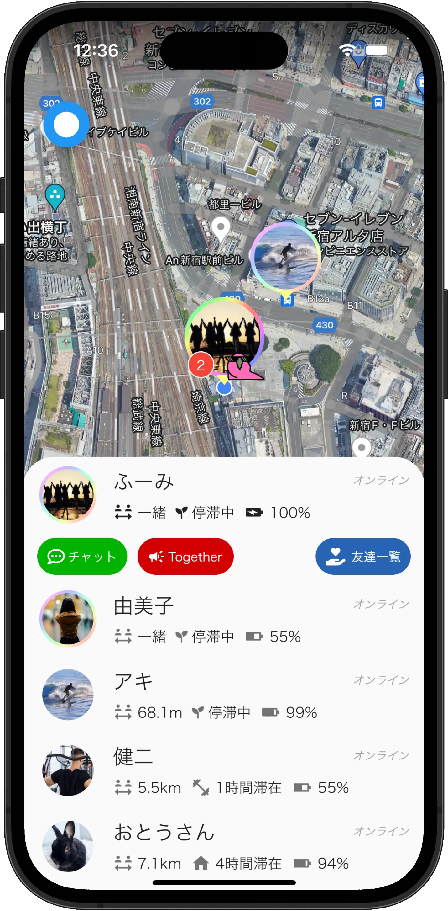
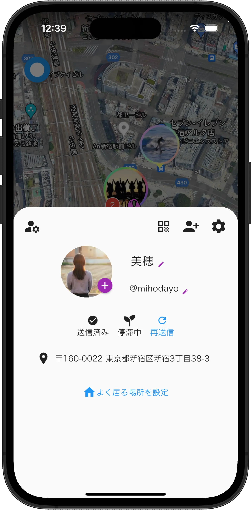
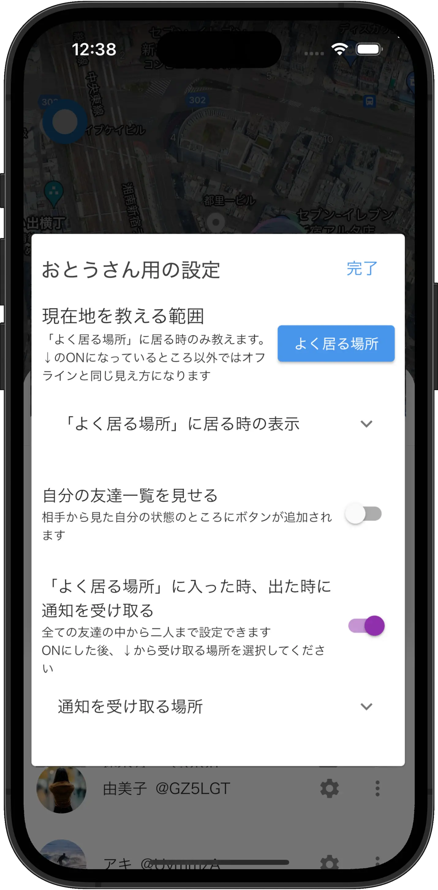
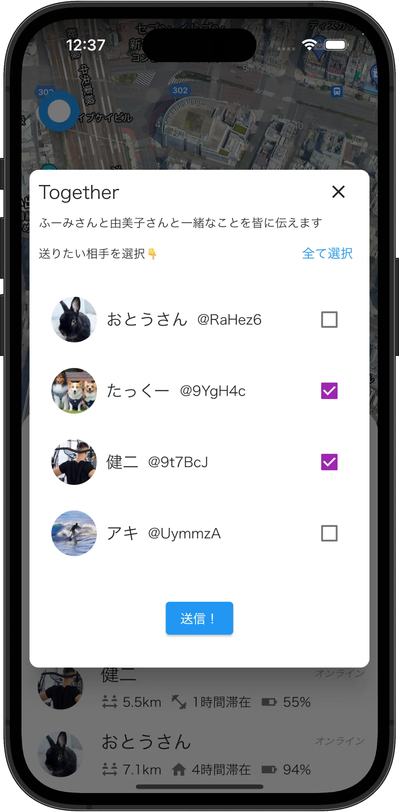

Batty（バッティー）
位置情報共有SNS
「今」がすぐに分かる
Battyなら、友達の「今」を一覧で楽々確認。地図から探さなくてもすぐに分かります。

自分の居場所をしっかり伝える
アプリ上では更新されているはずなのに、友達から見ると動いてない…なんてこともありません。
Battyなら送信状態が一目で見れる上に、GPSの位置がずれていた時も再送信できます。

公開範囲もばっちり設定
なんでもオープンなことが仲良しの秘訣…とは限らないですよね😔
Battyは相手ごとに伝える位置情報を細かく設定できます。
また、通知機能を使うことで、家族や友達、同棲相手が出発や帰宅をした際にプッシュ通知を受け取ることも可能です。
これを組み合わせると、例えば家族には学校と自宅の到着だけ伝えて、それ以外は教えない、という使い方が出来ます。

誰かと一緒な時に「Together」しよう！
友達と一緒にいるときに、今誰といるかを教えられるのが「Together」機能。
他の友達も呼んだり、意外な人と一緒にいることを伝えたり…、使い方は沢山！

今すぐアプリストアでダウンロード
※ Battyは知人と連絡を取り合うためのアプリです。
知らない人とアプリ内で交流する機能はありません。